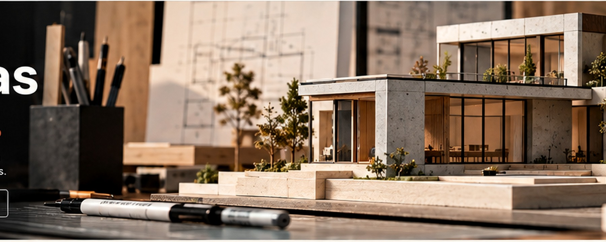

Considered selectionUseful tools, not clutter.

ARCHITECTURE · MODEL MAKING · DESIGN SUPPLIES
From ideas
to real spaces.
Architectural models, drafting tools and considered materials for every stage of your creative process.
T.Think in lines. Build in detail.Tools and materials for ideas taking shape.
01 / THE MAKING OF SPACE
Built for precisionFor details that matter.
Material-led designExplore texture and form.
Studio supportHelp choosing your materials.
A PLACE FOR EVERY PROCESS
Find your working language.
From first sketches to presentation-ready models, explore tools and materials by the way you create.
THE TRAZO EDIT
Essentials for your next project.
Selected for precision, versatility and the pleasure of making.
Prices are illustrative launch estimates in USD, not live quotes. Confirm specifications, stock and final pricing before commercial launch.
THE OBJECT / 001
OUR POINT OF VIEW
Good design begins long before the final form.
TRAZO is built around the in-between moments: testing a proportion, choosing a surface, refining a line, rebuilding a detail. Our collection is designed to support the hands-on process that turns an idea into something you can see, touch and share.
01Make with intentionKeep the process clear and purposeful.
02Respect the materialLet texture, scale and structure guide decisions.
03Refine every detailSmall choices give a model its character.
FIELD NOTES / TRAZO
Ideas worth working through.
Short guides for materials, methods and the craft of making architectural ideas tangible.
FIELD NOTE 0101
MATERIAL GUIDE · 5 MIN READ
Choosing the right board for a scale model
Compare thickness, rigidity and finish before your next cut.
Ask us about materials ↗FIELD NOTE 0202
WORKSHOP · 4 MIN READ
Clean edges, calmer presentation
A few practical habits for more controlled model-making.
Get studio guidance ↗FIELD NOTE 0303
PROCESS · 6 MIN READ
Building a landscape that feels in scale
Use repetition, variation and restraint to give a model context.
Explore landscape details ↗LET'S MAKE IT CLEAR
Not sure which material
fits your next idea?
Tell us what you are building and we will help you identify the right category to explore. Contact details below are placeholders and must be replaced before launch.
PRODUCT & ORDER SUPPORTcamille@bourdeau.be+1 (555) 014-2026EXAMPLE LOCATION
Portland, OR 97205 · Example only
Contact the studio ↗